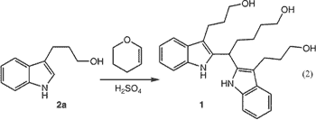
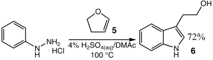
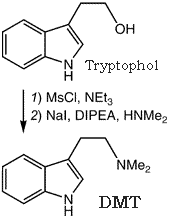

Synthesis of Tryptophol from
Dihydrofuran and Phenylhydrazine
Abstract1
A general method was developed for the one-pot synthesis of highly functionalized indoles from simple, commercially
available aryl hydrazines and cyclic enol ethers. Enol lactones were also used as substrates, affording substituted
indole acetic acid or indole propionic acid derivatives. This procedure affords 2,3-disubstituted indoles as single
regioisomers from the appropriately substituted enol ether or enol lactone.
Among the diverse and creative approaches that have been discovered, the Fischer indole reaction remains the
benchmark to which other methods are compared. Despite being quite versatile, the Fischer indole reaction with
aldehydes often suffers from low yields and involves a two-step process (i.e., hydrazone formation, [3+3] rearrangement).
We herein wish to report a convenient and practical one-pot synthesis of 3-substituted indoles from commercially
available cyclic enol ethers and enol lactones and the extension of this procedure to the regioselective synthesis of
2,3-disubstituted indoles. In our pursuit of an efficient synthesis of tryptophol homologs, we were intrigued with the possibility of using
dihydropyran as an aldehyde equivalent in the Fischer indole reaction. We suspected that suitable conditions could
be developed that would not only generate the hydrazone from the aryl hydrazine and dihydropyran in situ but also
catalyze the [3+3] rearrangement in the same pot.
Equation 1

We chose 4% aqueous sulfuric acid as the solvent because of its documented success in promoting the Fisher indole
reaction involving the in situ hydrolysis of an aldehyde protected as its dimethyl acetal2.
When dihydropyran was added to a solution of phenylhydrazine hydrochloride in 4% aqueous sulfuric acid at 100�C, indole
2a [homotryptophol] was obtained in 50% isolated yield. The major byproduct of the reaction was triol 1, resulting from further reaction
of 2a with dihydropyran (Eq. 1 ).
We suspected that 1 was produced due to the high concentration of dihydropyran relative to indole product during the reaction; however, slow addition of dihydropyran did not decrease the level of 1 (49%).Note 1 After considerable study,
it was discovered that addition of a cosolvent to the reaction significantly improved the reaction profile, producing
less than 5% of byproduct 1.Note 2 Of the solvents investigated, acetonitrile (MeCN) and N,N-dimethylacetamide (DMAc) were
optimal, affording indole 2a in 85 and 90% yields, respectively.Note 3
Equation 2

The utility of this method was highlighted in the synthesis of Glaxo's antimigraine drug, sumatriptan.
Despite the documented difficulty of Fischer indole reactions with hydrazine 3 [4-(MeNHSO2CH2)C6H4-NH2NH2] due to the instability of the product
under acidic conditions3, the one-pot reaction could be accomplished to cleanly afford the desired hydroxyindole 4 [5-(MeNHSO2CH2)-2a].
Activation of the hydroxyl group as the mesylate followed by displacement in the presence of excess dimethylamine according to previously disclosed methodology3b (Eq. 3) afforded sumatriptan in three steps and 45% overall yield
(unoptimized).
Equation 3

The reaction of phenylhydrazine with other cyclic enol ethers was
then investigated further. For example, reaction of phenylhydrazine with dihydrofuran (5) afforded tryptophol (6) in 72% yield (Eq. 2).
In conclusion, a general, one-pot method for the synthesis of highly functionalized indoles from commercially
available cyclic enol ethers and enol lactones has been demonstrated. The procedure is general with respect to
both the aryl hydrazine and the enol ether that are used. The method was especially useful for the regioselective
synthesis of 2,3-disubstituted indoles. Cyclic enol lactones could be used in this coupling to afford substituted
indole propionic acids and indole acetic acid derivatives in an efficient manner.
Notes:
- Excess hydrazine (2 equiv) slightly reduced the amount of 1 (40%).
- Importance of the cosolvent is due to the homogenization of the reaction mixture. In purely aqueous systems, the product and dihydrofuran are insoluble, creating a highly concentrated "organic layer" that leads to increased formation of 1.
- Performing the reaction at 100�C was optimal. Lower temperatures gave significantly lower yields of 2a (50�C, 33% yield; 25°C, 18% yield). However, in the case of more electron-rich hydrazines such as p-methoxyphenylhydrazine, lower temperatures (55°C) were needed to prevent the formation of the methoxy-substituted analogue of 1.
Experimental
Typical Procedure
To a solution of phenylhydrazine HCl (1 g, 6.92 mmol) in 4% aq. H2SO4 (10 mL) and DMAc (10 mL)
at 100°C was added dihydrofuran (630 µL, 6.92 mmol) dropwise over 2 min. The reaction was aged for 2 h and
then cooled to room temperature, extracted with isopropyl acetate, and washed with water three times. The crude material
was purified by flash chromatography to give tryptophol in 72% yield.
For the preparation of DMT from Tryptophol via its mesylate ester, see the general procedure published elsewhere3b.

N,N-Disubstituted Tryptamines from Tryptophols4
Abstract4
N-disubstituted tryptamines are obtained in high yield on boiling a solution of tryptophols in benzene or xylene with secondary amines and a nickel catalyst.
Experimental
General procedure for the preparation of dialkyltryptamines:
Into a flask fitted with a Dean-Stark recieving trap were placed 0.1 moles of tryptophol [2-(3-indolyl)-ethanol], 0.1 moles of a secondary amine [dimethylamine for DMT],
4ml of skeletal nickel [Raney Ni] suspension in water and 100ml of benzene or xylene [I assume toluene is good too]. The reaction mixture was refluxed, and the condensed
water collected for four hours, the hot solution filtered and the catalyst washed repeatedly with benzene or xylene [or toluene] and the mother liquor concentrated under
vacuum. The product was either distilled in vacuo or isolated as the hydrochloride by acidifying with an equivalent of hydrogen chloride solution [they are probably referring
to a non-aqueous HCl solution here]. The yields were in the 82-98% range.
(Lilienthal's voice:) Mechanism5: The alcohol is catalytically dehydrogenated to the
aldehyde, which reacts with the amine to an imine, which is subsequently hydrogenated to the amine. Usually
this gives moderate yields and needs high temperatures (very uncool for the low-boiling dimethylamine).
From Indole-3-Acetic Acid via Tryptophol to DMT
Some notes on this route by 'Know Conscience'
Main Step One:
Diborane is a newer (than LAH), more selective reducing agent specific for carboxylic acids. It reduces them
to primary alcohols quickly and in high yield at room temperature in an ether solvent such as diglyme or THF.
LAH will also get the job done, but it is difficult to work with and apparently only gives a 65%
yield in this instance.
Main Step 2:
Once you've got the 3-(2-hydroxyethyl)-indole made, PBr3 is a better way to brominate it than HBr. This is
because HBr is a stronger acid than PBr3 and will therefore tend to favor an unwanted dehydration side reaction
on this primary alcohol.
That is, 3-(2-hydroxyethyl)-indole + HBr → 3-(2-bromoethyl)-indole + 3-ethenyl-indole.
Also, every one PBr3 molecule has the potential to brominate three 3-(2-hydroxyethyl)-indole molecules to form
three 3-(2-bromoethyl)-indole molecules plus one H3PO4 (phosphoric acid) molecule. So if you have X moles of
3-(2-hydroxyethyl)-indole, you will only need to use X/3 moles PBr3.
Phosphorus acid is water soluble and has a high boiling point, so it can therefore be separated from the
brominated indole product by means of an acid-base extraction or by simple distillation after basification.
Experimental
3-(2-Methylaminoethyl)-indole (N-Methyltryptamine, NMT)6
- Methyl 3-indoleacetate was obtained from 3-indole-acetic acid following the esterification procedure of Jackson7 The yield from 30.0g of acid was 28.6 g. (89%) of
colorless oil, b.p. 160-163�C/0.9mmHg, reported7 in the neighborhood of 180�C at 2mmHg.
- Tryptophol was prepared by the reduction of the methyl ester with lithium aluminum hydride in the usual way to yield 96% of colorless solid melting at 58.5-59.5�C.
Recrystallization from benzene raised the mp to 59-60�C. This material has been prepared by reduction of the ester with sodium in alcohol8 and by reduction of the acid
with lithium aluminum hydride in 65% yield9 (reported mp 58-59�C and 57-58�C).
- 3-(2-Bromoethyl)-indole was prepared according to Hoshino8. From 3.0 g. of tryptophol there was obtained 3.5g (81%) of colorless material mp 100-102�C,
(Lit8 mp 98-99�C, yield 60%.)
- N-Methyltryptamine was prepared by the method of Hoshino9 by heating the halide with methylamine at 100�C in a sealed apparatus. The yield of pure amine was very poor
(~5-8%), mp 89-90�C. The reported mp was 89-90�C, with no yield given8. The orange picrate melted at 193-195�C after recrystallization from methanol; reported8 mp 190-191�C.
N,N-Dimethyl-3-indoleacetamide6
A mixture of 16.0 g of methyl 3-indoleacetate, 100 ml. of ethylene glycol and 19.4g of anhydrous dimethylamine was stirred at room temperature for 40 hr. The mixture was
poured into 100 ml. of water and extracte with 5x100 mL portions of ether-ethyl acetate (1:1). This extract was washed with a little water, dried and evaporated to give
a red oil. This was taken up in warm ethyl acetate and, on chilling, three crops of colorless crystals weighing a total of 12.5g (70%) were obtained; mp 126-128�C. Samples
melting at 116-117�C were also obtained by recrystallization from ethyl acetate. Late samples gave only the higher mp. The infrared spectra in chloroform of the two samples
with different mp were identical, with a strong amide C=O band at 6.10µ.
3-(2-Dimethylaminoethyl)-indole (N,N-Dimethyltryptamine, DMT)6
A suspension of finely-divided amide (2.1 g) in 100 ml. of ether was added to a slurry of 0.8 g. of lithium aluminum hydride in 50 ml. of ether, and the mixture was heated
under reflux for 4 hr. The mixture was treated in the usual way, and the final organic extract of the amine gave, after recrystallization from hexane, 1.6 g. (85%) of material
melting at 47-49�C. This material was converted to a higher melting form (71-73�C) by crystallization from hexane after seeding with an authentic specimen of mp 73-74�C.
The infrared spectra in chloroform of the two samples were identical.